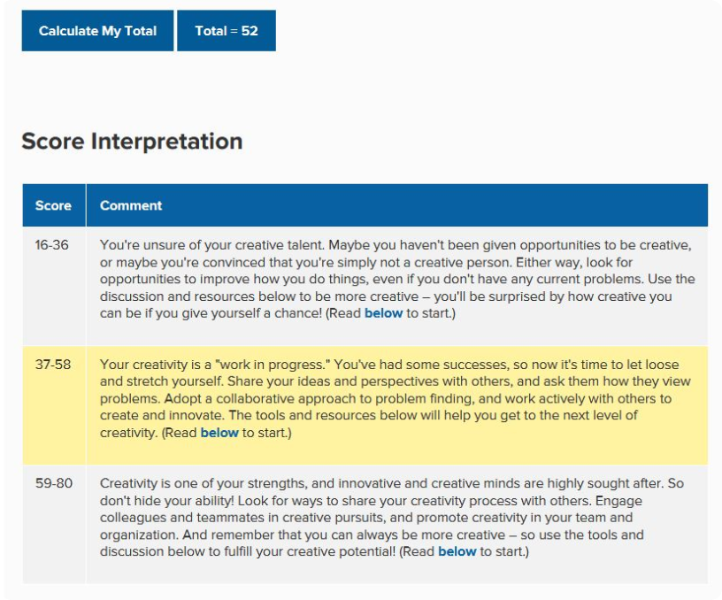

The ideal job I have linked above (screenshot below) is for an embedded software engineer in the company I currently work for. This is the position I will be working towards over the next several years. The key role of this position is to develop software framework for embedded machinery as well developing new features to expand the current embedded ecosystem. Embedded software development is appealing as it brings hardware to life, it can be the difference between a machine working efficiently or a machine filled with bugs and the hardware not working to its full potential. This challenge is key to job satisfaction for me. The main skills required for this position is proficiency in C++, LUA, Python, JS, Bash and experience in Linux operating systems along with 3+ years’ experience in software development and a degree in computer engineering. My background in electrical engineering gives me a in depth understanding of how machinery is designed and controlled however having the skills to proficiently program is the key objective I need to focus on and develop during my time at RMIT.
Personal information:
Hi there and welcome to my page! My name is Jason. I enjoy spending my free time in the outdoors, taking my dog Beetlejuice to the beach, surfing, hiking and camping. Previously I have studied electrical engineering and currently work as an engineer, specifically in Industrial automation in the food industry. This career has taken me to all parts of Australia, Iceland, Denmark and the UK. My choice to attend RMIT comes from the desire to upskill myself. This will hopefully open more opportunities in my current career path.
Interest in IT:
My interest in IT stems from my intrigue in machinery automation and watching the technology that controls automation advance over the past 10 years I have been involved in the industry. Automation and robotics is where I have the most experience with IT. This type of technology used to solely rely on PLC and SCADA control systems however Linux and Windows based embedded systems are now more commonplace. For the reason of wanting to have a deeper understanding of these systems I made the choose to attend RMIT to upskill my knowledge. My goal at RMIT is to focus on the programming side of IT, this is the area that I have the greatest interest in due to the mix of analytical thinking and being creative. This suits my personality well.
Ideal job:
Personal profile:
The results from the below tests for me highlighted some strengths and weaknesses that I was already aware of as well as some that I will need to keep in mind when working in a team. When reading the results from 16 personalities the results were scarily accurate and I enjoyed identifying both positive and negative aspects of my personality. My previous work in teams has been overall positive, I work well in a team environment, although working solo is preferred. To keep a happy team it is important that I keep other peoples feelings in mind, I tend to dismiss and overlook these when working in a professional team environment.
16 personalities – Debater. Strengths: Knowledgeable – Debaters rarely pass up a good opportunity to learn something new, especially abstract concepts. This information is not usually absorbed for any planned purpose as with dedicated studying, people with the Debater personality type just find it fascinating.
Quick Thinkers – Debaters have tremendously flexible minds and are able to shift from idea to idea without effort, drawing on their accumulated knowledge to prove their points, or their opponents’, as they see fit.
Excellent Brainstormers – Nothing is quite as enjoyable to Debaters as analyzing problems from every angle to find the best solutions. Combining their knowledge and originality to splay out every aspect of the subject at hand, rejecting without remorse options that don’t work and presenting ever more possibilities, Debaters are irreplaceable in brainstorming sessions.
Charismatic – People with the Debater personality type have a way with words and wit that others find intriguing. Their confidence, quick thought and ability to connect disparate ideas in novel ways create a style of communication that is charming, even entertaining, and informative at the same time.
Weaknesses: Very Argumentative – If there’s anything Debaters enjoy, it’s the mental exercise of debating an idea, and nothing is sacred. More consensus-oriented personality types rarely appreciate the vigor with which Debater personalities tear down their beliefs and methods, leading to a great deal of tension.
Insensitive – Being so rational, Debaters often misjudge others feelings and push their debates well past others’ tolerance levels. People with this personality type don’t really consider emotional points to be valid in such debates either, which magnifies the issue tremendously.
Intolerant – Unless people are able to back up their ideas in a round of mental sparring, Debaters are likely to dismiss not just the ideas but the people themselves. Either a suggestion can stand up to rational scrutiny or it’s not worth bothering with.
Can Find It Difficult to Focus – The same flexibility that allows Debaters to come up with such original plans and ideas makes them readapt perfectly good ones far too often, or to even drop them entirely as the initial excitement wanes and newer thoughts come along. Boredom comes too easily for Debaters, and fresh thoughts are the solution, though not always a helpful one.
Your Scores: • Auditory: 30% • Visual: 25% • Tactile: 45% • You are a Tactile learner! If you are a tactile learner, you learn by touching and doing. You understand and remember things through physical movement. You are a "hands-on" learner who prefers to touch, move, build, or draw what you learn, and you tend to learn better when some type of physical activity is involved. You need to be active and take frequent breaks, you often speak with your hands and with gestures, and you may have difficulty sitting still. As a tactile learner, you like to take things apart and put things together, and you tend to find reasons to tinker or move around when you become bored. You may be very well coordinated and have good athletic ability. You can easily remember things that were done but may have difficulty remembering what you saw or heard in the process. You often communicate by touching, and you appreciate physically expressed forms of encouragement, such as a pat on the back. Here are some things that tactile learners like you can do to learn better: • Participate in activities that involve touching, building, moving, or drawing. • Do lots of hands-on activities like completing art projects, taking walks, or acting out stories. • It's OK to chew gum, walk around, or rock in a chair while reading or studying. • Use flashcards and arrange them in groups to show relationships between ideas. • Trace words with your finger to learn spelling (finger spelling). • Take frequent breaks during reading or studying periods (frequent, but not long). • It's OK to tap a pencil, shake your foot, or hold on to something while learning. • Use a computer to reinforce learning through the sense of touch.
Remember that you learn best by doing, not just by reading, seeing, or hearin
Creativity test results = Total 52

Project idea:
Overview: The idea I am going to explore and develop is a GPS smart dog collar and user app. The user app is where you will have the capability of creating virtual fences as well linking to government data bases to alert the owner that their dog is an area of restriction, for example, National parks or 1080 dog bait areas. The app will also feature the ability for user updates on warnings such as wild dogs spotted in this area or venomous snakes spotted in area. The app will track the dog via a smart collar containing the GPS tracker, speaker and e-collar correction prongs.
Motivation: While travelling Australia last year with my dog I found myself constantly Googling areas of National Park restrictions, whether 1080 is being used in the area or if crocodiles are found in this part of the country. Having an app that queries these data bases and provides these updates automatically would save a lot of time and stress. Another important feature of this project that will provide peace of mind is the ability of creating a virtual fence around your dog when you’re travelling to keep them safe and from exploring too far. A research study carried out in the US (Weiss et al. 2012) found an estimated 11-16% of dogs are reported missing in the first 5 years of ownership and with an estimated dog population in the US of 78.2 million this product also has it uses around the home.
Description: The most important part of this product of this product is the smart phone app which will be covered first. Key features of the app: • Live feedback of collar location via GPS tracking. > To achieve this the app will keep track of the collar via a GPS chip inside the collar. • Live updates of any restricted or danger areas the collar is entering. > The app will query databases for this information. • The ability for the user to update a data base of areas that maybe of concern to other users. > An important part of growing the database is for users to have the option, via the app, to submit updates of possible dangers in areas visit. For example, if the user attends an area where venomous snakes have been seen, they can submit this information along with their location coordinates and the app will generate a warning to other users when they enter the area. • The user will have the option of creating their own virtual fence by selecting an area on a map of by selecting a circumference around the collar. > This feature will give the user the option of creating a virtual in any area GPS signal is available. To achieve this the user selects an area on a map inside the app. • Communication to the collar will be possible via 2-way audio through the app. > If the communication to the collar is required to give the dog a command, then this will be possible via two-way audio.
The second piece to this product is the collar, which the app gathers the location details from. Key features of the collar: • The collar will contain a GPS chip to obtain current location coordinates. • A speaker in the collar will provide two-way audio. This speaker will also give an audio warning when within a 5m proximity to virtual fence boundary. • Static stimulation is used when the collar comes within 2m to virtual fence.
Tools and Technology: The development of a smart phone application will be key to controlling this product to give the user a user-friendly, interactive application that is easy to understand and navigate. To achieve a successful cross-platform app the language that is likely going to be JavaScript or C, depending on the GPS tracking chip requirements. For this task, sound programming skills are required. Another key technology that will be used is a GPS tracking chip that will be inside the collar and will ping the current coordinates to connected smart phone app. Software or a custom program will need to written for this GPS tracking module.
Skills required: Experience with geo-location app creation will be an essential skill required to give the app a base to develop upon. Building on this with a user-friendly, interactive GUI is vital for ease of use. For this reason, proficiency in Java will be needed as this will likely be the choice of programming language to create the GUI. A database will also need to be created that stores restricted and danger areas around the country along with points of concern added by other users. For this task SQL is the database language of choice, experience in creating SQL databases will be the know-how required for this activity.
Outcome: The success of this project will have several positive outcomes. The product will aid in prevention of losing your furry companion to misadventure along with locating them if this situation ever occurs with the ability to keep them in one place via the use of the virtual fence. With the use of a database of restricted and danger areas, the product will also further support the user in keeping their dog safe by being aware of possible hazards in their current area. The deployment and use of this product would give your dog the best chance of not ending up being part of a lost and never found dog statistic.